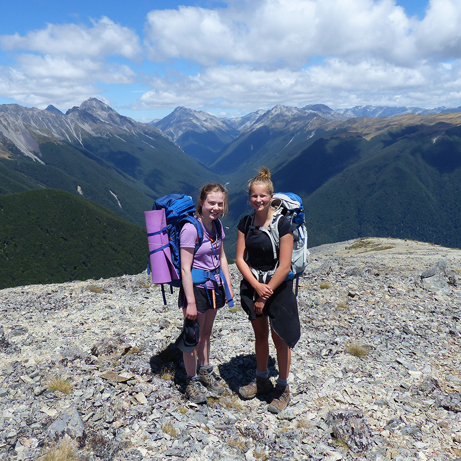
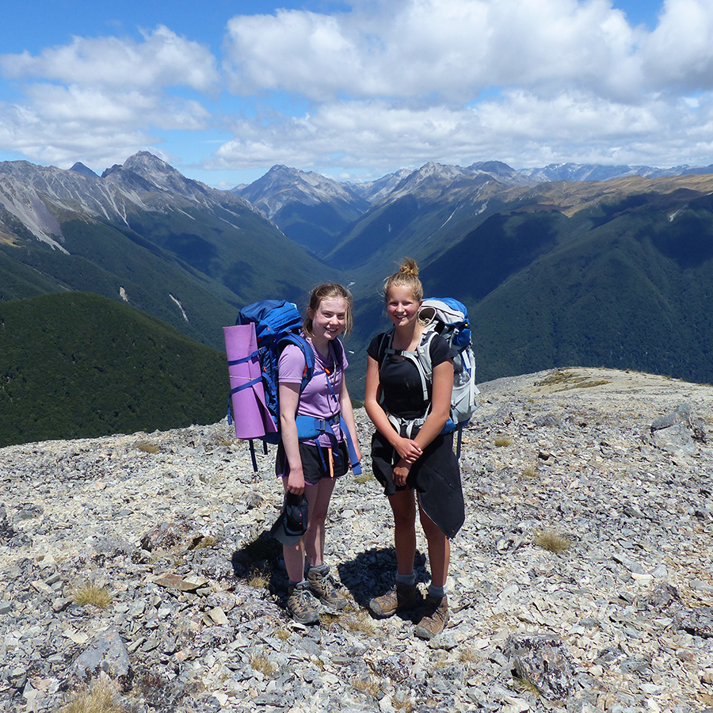

Welcome to Victoria University of Wellington Tramping Club's Online Journal.
Our Tramps:
In this section, I will have a carousel of click-able information cards with a photo and name of each tramp the club has completed.
These cards can be clicked on, and the user will be led to a sub-page will a recount of the tramp/storytime.
Heaphy Track
Travel through tussock downs, lush forests and nīkau palms to the roaring seas of the West Coast.
Human history dates back hundreds of years here.
Can you spy the nocturnal carnivorous land snail around Heaphy Hut one wet, damp night, or even a takahe?
Explore the heart of the South Island!
Visit Angelus Hut which sits on the shores of Lake Angelus, surrounded by spectacular mountain views!
From May to October, the lake is frozen, snow blankets your route and you may have to dig your way to the hut!
Escape on an island adventure to the 3rd island of Aotearoa!
Relax and unwind in the peaceful surroundings with NZ bush, birds and beach at your side!
Follow this leisurely circuit track along open coastline, through forest and along sheltered shores.
Stroll past the beech-forested shorelines of beautiful lakes Te Anau and Manapouri, on this rugged, wild Kiwi adventure!
From tussock-covered ridgelines to the spectacular alpine vistas, you won't want to miss it.
The Kepler Track is one for the books!
Backpack (40–60 litre size for multi-day hiking)
Waterproof/plastic pack liner
Sleeping bag (3–4 season)
First aid kit (including insect repellent, sunscreen, blisterkit, personal medication e.g. antihistamine for allergy towasp stings)
Survival kit (survival blanket, whistle, paper, pencil, highenergy snack food)
Safety equipment relevant to the track and time of year (e.g. map, compass)
Drink bottle (1-2 litre capacity)
Eating and cooking utensils (knife, fork, spoon, plate, cup,pot/pan/billy, cleaning kit, tea towel). Gas cookers are in huts – you do not need to take gas.
Matches or lighter in waterproof container
Toiletries
Torch/flashlight and spare batteries
Rubbish bag
Booking confirmation letter and ID
Back-up toilet option
Clothing
For multi-day walking you'll need at least one set of clothes to walk in and another dry set to change into at night.
Walking boots or firm footwear (should be comfortable and well broken in)
Socks (wool or polypropylene)
Shorts (quick dry material)
Shirt (wool or polypropylene)
Under layers, top and bottom (wool or polypropylene)
Mid-layers (wool or polar fleece)
Raincoat (waterproof, windproof with hood)
Overtrousers (wind and water proof)
Warm hat and gloves
Sunhat and sunglasses
Extra socks, underwear, shirt/lightweight jersey
Top tips from us
If you're staying at Brown Hut or Gouland Downs Hut - these huts don't have gas cooking facilities or lighting. You'll need to take: Portable stove and fuel, Candles
You can't buy food on the track.
Bring food that is lightweight, fast cooking and high in energy value. For example:
Breakfast: cereal/porridge/oats, firm bread, honeyor other spreads
Lunch: cracker biscuits, cheese, salami, jam/jelly, fruit
Dinner: instant soup, pasta or rice, dried vegetables or fruit, cheese or dehydrated (freeze-dried) meals.
You'll also need water, snacks, biscuits, muesli bars, tea or coffee, powdered fruit drinks and emergency food in case of any delays on the track.
If you're camping: Bring a Tent, Sleeping mat, Portable stove and fuel
We would recommend you bring a Camera to capture the stunning views, and Ear plugs for communual bunkrooms
Find a tramp near you:
INSERT A WINDOW TO GOOGLE MAPS HERE, maybe showing different great walks/tramps around NZ


 
